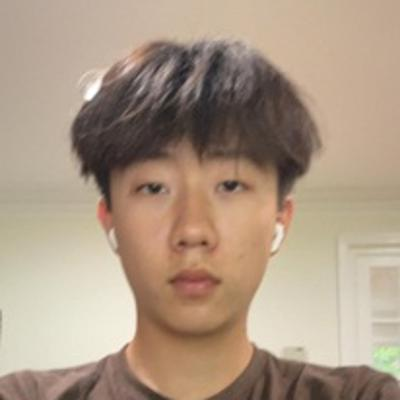
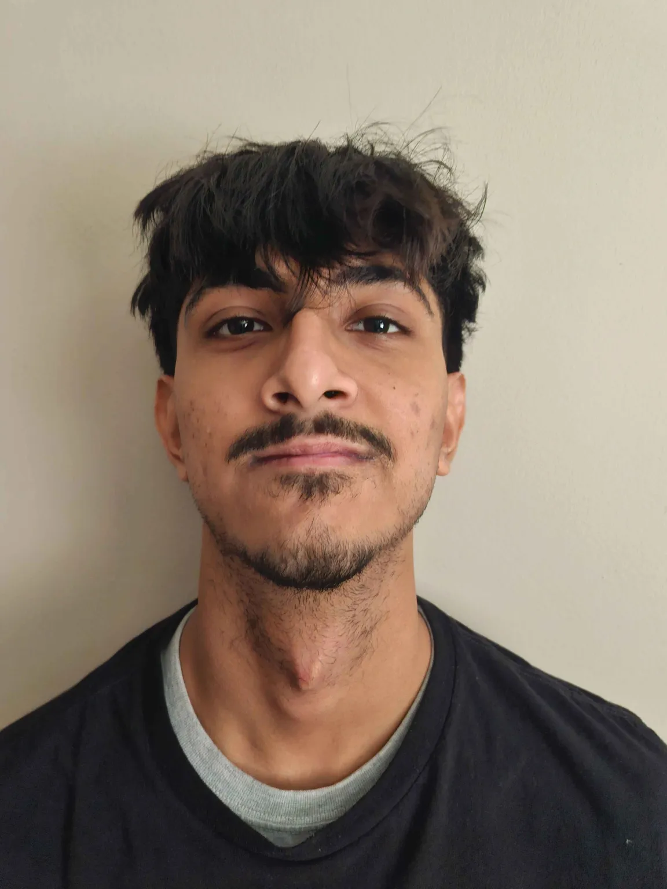

Wenhao is a senior based in New Jersey. He is interested in the inersection of AI and the humanities, and how humanities concepts can influence AI design and safety. In his free time, he enjoys playing spikeball and exploring nature.
wenhao@nxthorizon.org
Hello everyone, my name is Hamzah Rizvi, I am a senior based in West Lafayette Indiana, I am interested in the realm of bme and robotics, which is why I am interested to work in enginnering and all things tech related. In my free time I do three sports (volleyball, soccer, and track)
For collaboration or for any question about our work.
If you are a researcher, educator, or student who wants to work on responsible AI for social good, write to us.
wenhao@nxthorizon.org